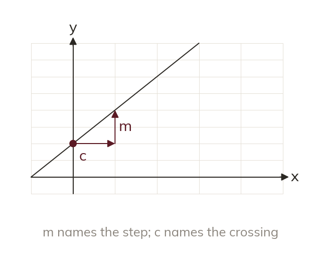

What m and c are
In y = mx + c, m is the gradient. c is the y-intercept, where the line crosses the y-axis.
Any linear equation written in the form y = mx + c has two useful numbers built into it: m is the gradient of the line, and c is the y-intercept - the value of y where the line crosses the y-axis, which is the value of y when x = 0.